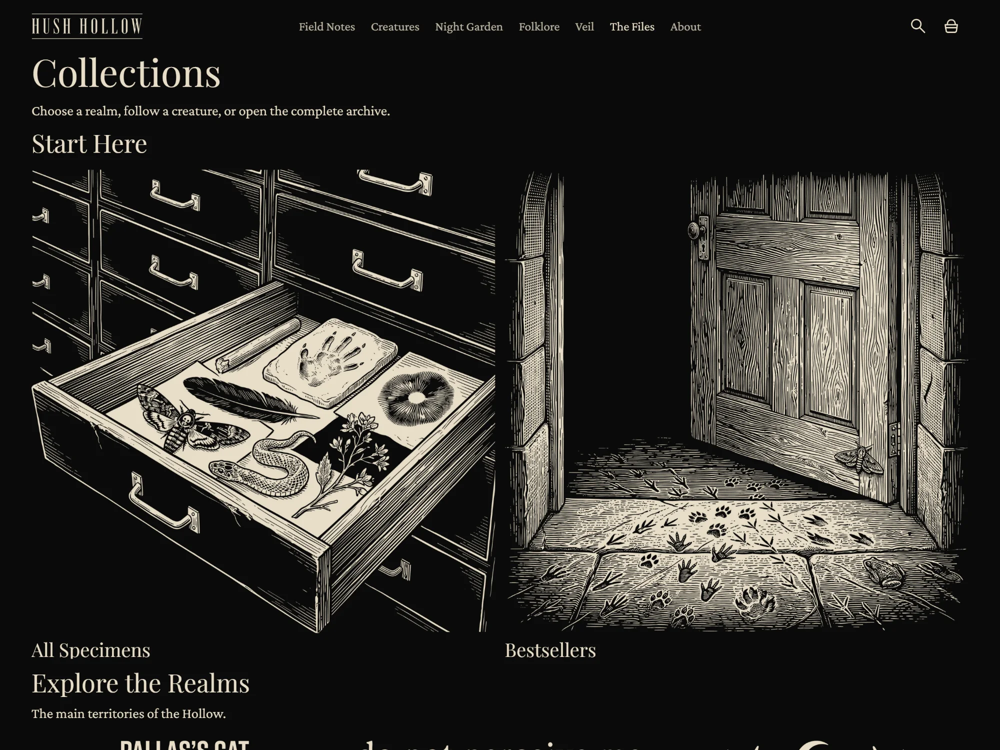
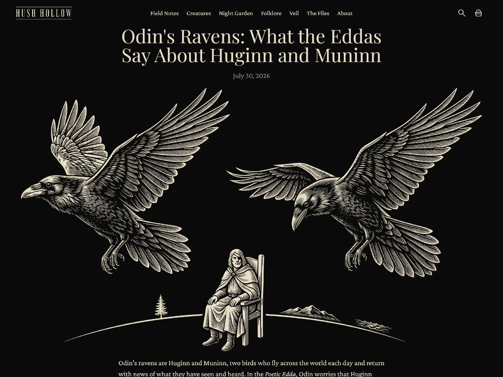
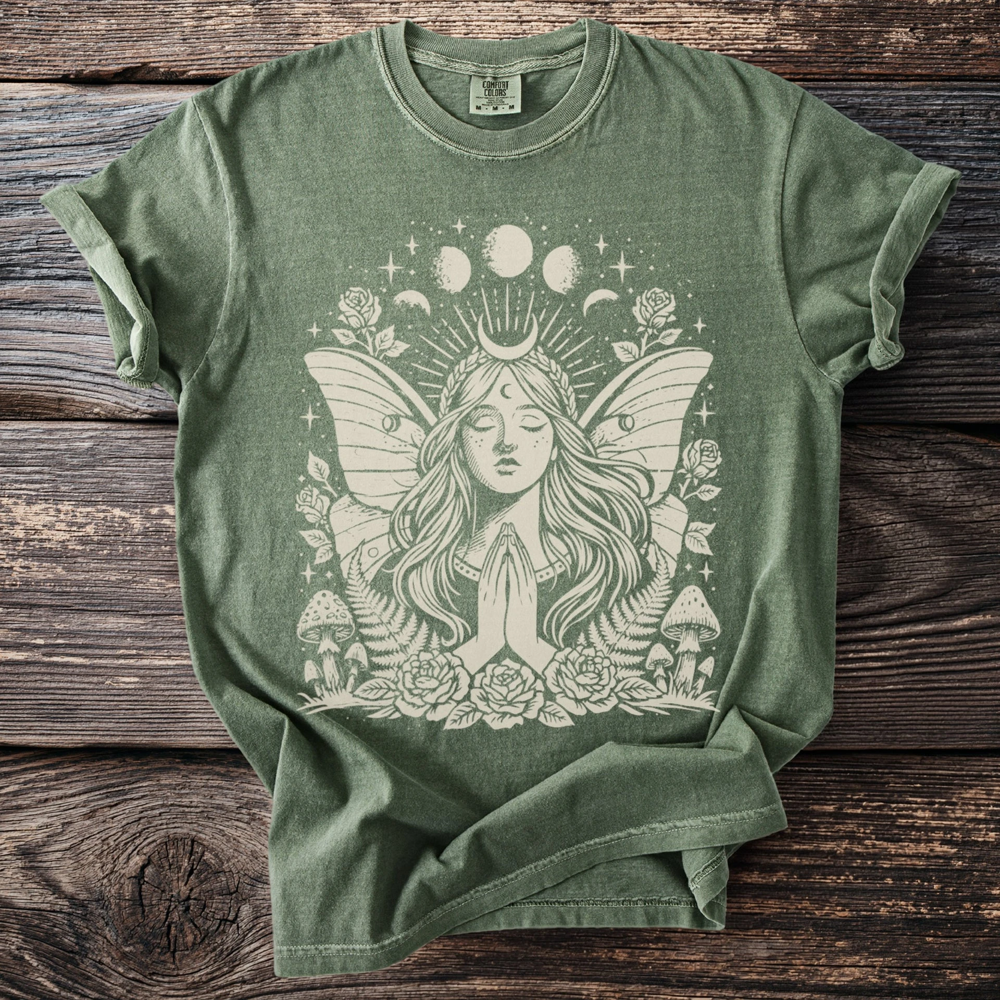
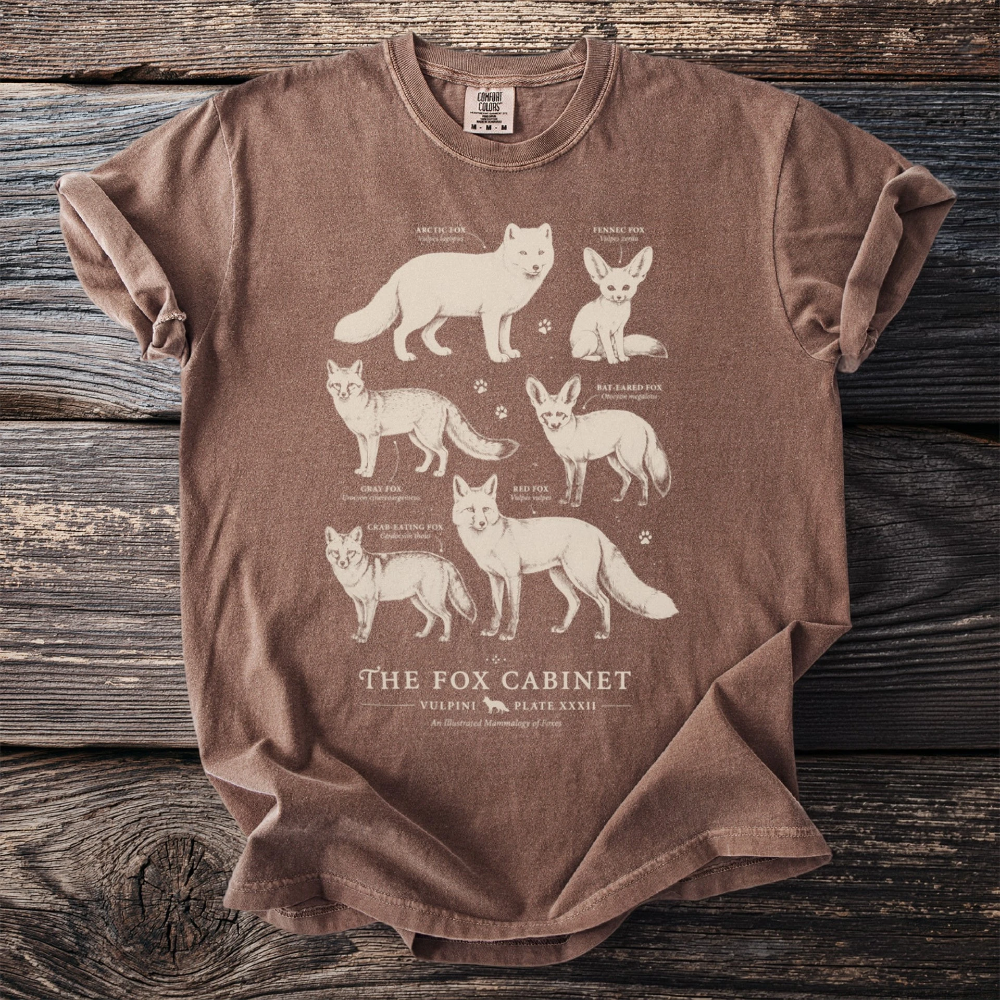

Experience
- Teezaro
Founder and e-commerce operator
- PresentHush Hollow
Founder, creative director, and Shopify operator
E-commerce creative direction · Operations
I connect visual direction, hands-on production, catalog operations, and performance feedback. The result is creative that can survive a 1,000+ product catalog and still feel intentional.
View selected work
At a glance
2.5 years building and operating e-commerce brands across Etsy and Shopify.
Founder and e-commerce operator
Founder, creative director, and Shopify operator
Shopify Admin, Etsy Shop Manager, Printify, Photoshop, Google Search Console, Excel, and Google Sheets.
Catalog automation, AI-assisted creative production, storefront changes, technical SEO, bulk operations, feed diagnostics, and publication QA.
Creative portfolio
Selected from Hush Hollow, a live Shopify brand with a 1,000+ product catalog. I set the visual rules, build the assets and listings, and review what ships.






Creative operating system
AI increases output. My job is to define the standard, catch silent failures, and decide what deserves to ship.
Set the brand rules, product role, composition, and customer promise.
Use AI image tools, Photoshop, reusable mockups, and batch workflows where they improve output.
Review anatomy, type, hierarchy, color, print readiness, and catalog consistency.
Use search behavior, clicks, conversion, and customer feedback to form the next hypothesis.
Operating cases
Two operating cases connecting catalog, storefront, fulfillment, and customer experience.
Founder · E-commerce operator · Creative director · CX lead
ProblemBuild and scale a print-on-demand business while keeping product quality, order execution, and customer trust connected across several platforms.
Evidence5,000+ sales · 5.0 rating · ≈1,500 reviews.

Founder · Brand strategist · E-commerce operator · Creative director
ProblemTurn a broad catalog of strange natural-history apparel into an owned brand with a coherent point of view and a store that can operate as one system.
EvidenceA live Shopify implementation spanning the storefront, catalog, offer architecture, policies, and The Hollow Journal.
Visit live store
Where I fit
Creative direction and e-commerce operations, from concept to live storefront.
Concepts, briefs, production standards, asset review, and approval to publish.
Storefront changes, promotions, apps, checkout, and release QA.
Product data, collections, pricing, merchandising, and bulk updates.
AI assists production. I own the standard and the release decision.
I connect creative decisions with what actually reaches the customer.
How I work
Trace how research, product data, publishing, orders, support, and measurement affect one another.
Separate visible symptoms from the process, data, or decision that is actually limiting the business.
Turn the solution into a clear workflow that can survive catalog growth and everyday operational pressure.
Use real outcomes and feedback to improve the system without inventing certainty the data cannot support.
Based in Tel Aviv

I am Vitaly Matsevich, an e-commerce creative operator who has built and run print-on-demand brands across Etsy and Shopify.
The business grew beyond 5,000 sales while maintaining a 5.0 rating with around 1,500 reviews, and that meant understanding how every decision, from the first product idea to a delayed shipment, affects the rest of the operation.
I now apply that experience to Hush Hollow, where I direct the visual world, produce commercial assets, build the catalog and storefront, and use AI where it improves the work rather than merely increasing volume.
Start with the real problem
I am open to roles and collaborations across e-commerce creative direction, brand systems, Shopify, catalog operations, and practical AI workflows.
Review the evidence